1과목: 재료역학
1. 자유단에 집중하중 P를 받는 외팔보의 최대 처짐 δ1과 W = ωL이 되게 균일분포하중(ω)이 작용하는 외팔보의 자유단 처짐 δ2가 동일하다면 두 하중들의 비 W/P는 얼마인가? (단, 보의 굽힘 강성은 EI로 일정하다.)
2. 다음 부정정보에서 고정단의 모멘트 Mo는?
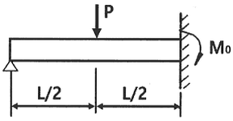
3. 그림과 같은 외팔보에 저장된 굽힘 변형에너지는? (단, 세로탄성계수는 E이고, 단면의 관성모멘트는 I이다.)
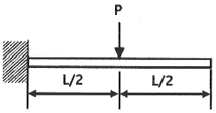
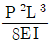
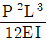
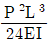
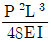
4. 지름 7mm, 길이 250mm인 연강 시험편으로 비틀림 시험을 하여 얻은 결과, 토크 4.08Nㆍm에서 비틀림 각이 8°로 기록되었다. 이 재료의 전단탄성계수는 약 몇 GPa인가?
5. 그림과 같은 보에 하중 P가 작용하고 있을 때 이 보에 발생하는 최대 굽힘응력이 σmax라면 하중 P는?
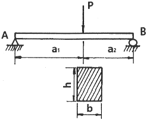
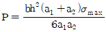
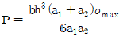
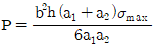
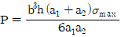
6. 그림과 같이 수평 강체봉 AB의 한쪽을 벽에 힌지로 연결하고 죄임봉 CD로 매단 구조물이 있다. 죄임봉의 단면적은 1cm2, 허용 인장응력은 100MPa일 때 B단의 최대 안전하중 P는 몇 kN인가?
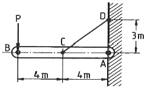
7. 지름 35cm의 차축이 0.2°만큼 비틀렸다. 이때 최대 전단응력이 49MPa이라고 하면 이 차축의 길이는 약 몇 m인가? (단, 재료의 전단탄성계수는 80 GPa이다.)
8. 양단이 고정된 균일 단면봉의 중간단면 C에 축하중 P를 작용시킬 때, A, B에서 반력은?
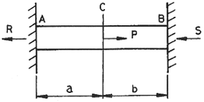
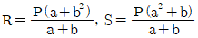
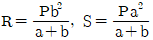
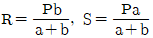
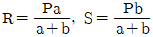
9. 아래와 같은 보에서 C점(A에서 4m 떨어진 점)에서의 굽힘모멘트 값은 약 몇 kNㆍm인가?
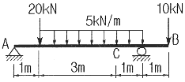
10. 그림과 같은 직사각형 단면에서 y1=(2/3)h의 위쪽 면적(빗금 부분)의 중립축에 대한 단면 1차모멘트 Q는?
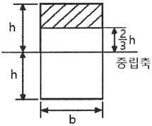
11. 공칭응력(nominal stress:σn)과 진응력(true stress:σt)사이의 관계식으로 옳은 것은? (단, εn은 공칭변형율(nominal strain), εt는 진변형율(true strain)이다.)
12. 그림과 같이 등분포하중이 작용하는 보에서 최대 전단력의 크기는 몇 kN인가?
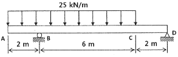
13. σx=700MPa, σy=-300MPa이 작용하는 평면응력 상태에서 최대 수직응력(σmax)과 최대 전단응력(τmax)은 각각 몇 MPa인가?
14. 안지름이 2m이고 1000kPa의 내압이 작용하는 원통형 압력 용기의 최대 사용응력이 200MPa이다. 용기의 두께는 약 몇 mm인가? (단, 안전계수는 2이다.)
15. 양단이 고정단인 주철 재질의 원주가 있다. 이 기둥의 임계응력을 오일러 식에 의해 계산한 결과 0.0247E로 얻어졌다면 이 기둥의 길이는 원주 직경의 몇 배인가? (단, E는 재료의 세로탄성계수이다.)
16. 높이가 L이고 저면의 지름이 D, 단위 체적당 중량 ϒ의 그림과 같은 원추형의 재료가 자중에 의해 변형될 때 저장된 변형에너지 값은? (단, 세로탄성계수는 E이다.)
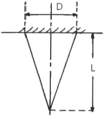
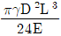
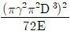
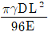
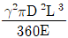
17. 그림과 같은 단면의 축이 전달할 토크가 동일하다면 각 축의 재료 선정에 있어서 허용전단응력의 비 τA/τB의 값은 얼마인가?
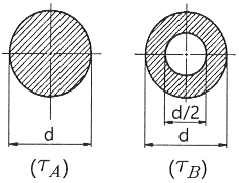
18. 단면 지름이 3cm인 환봉이 25kN의 전단하중을 받아서 0.00075 rad 의 전단변형률을 발생시켰다. 이때 재료의 세로탄성계수는 약 몇 GPa인가? (단, 이 재료의 포아송 비는 0.3이다.)
19. 원형단면의 단순보가 그림과 같이 등분포하중 ω=10N/m를 받고 허용응력이 800Pa일 때 단면의 지름은 최소 몇 mm가 되어야 하는가?
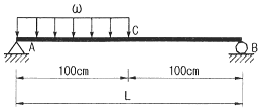
20. 그림과 같이 지름 d인 강철봉이 안지름 d, 바깥지름 D인 동관에 끼워져서 두 강체 평판 사이에서 압축되고 있다. 강철봉 및 동관에 생기는 응력을 각각 σs, σc라고 하면 응력의 비(σs/σc)의 값은? (단, 강철(Es) 및 동(Ec)의 탄성계수는 각각 Es=200GPa, Ec=120GPa이다.)
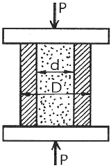
2과목: 기계열역학
21. 비가역 단열변화에 있어서 엔트로피 변화량은 어떻게 되는가?
22. 그림과 같이 A, B 두 종류의 기체가 한 용기 안에서 박막으로 분리되어 있다. A의 체적은 0.1m3, 질량은 2kg이고, B의 체적은 0.4m3, 밀도는 1kg/m3이다. 박막이 파열되고 난 후에 평형에 도달하였을 때 기체 혼합물의 밀도(kg/m3)는 얼마인가?
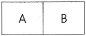
23. 엔트로피(s) 변화 등과 같은 직접 측정할 수 없는 양들을 압력(P), 비체적(v), 온도(T)와 같은 측정 가능한 상태량으로 나타내는 Maxwell 관계식과 관련하여 다음 중 틀린 것은?
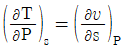
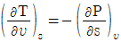
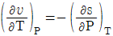
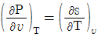
24. 냉매로서 갖추어야 될 요구 조건으로 적합하지 않은 것은?
25. 어떤 이상기체 1kg이 압력 100kPa, 온도 30℃의 상태에서 체적 0.8m3을 점유한다면 기체상수(kJ/kgㆍK)는 얼마인가?
26. 어떤 가스의 비내부에너지 u(kJ/kg), 온도 t(℃), 압력 P(kPa), 비체적 v(m3/kg) 사이에는 아래의 관계식이 성립한다면, 이 가스의 정압비열(kJ/kgㆍ℃)은 얼마인가?
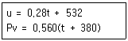
27. 이상적인 가역과정에서 열량 △Q가 전달될 때, 온도 T가 일정하면 엔트로피 변화 △S를 구하는 계산식으로 옳은 것은?
28. 다음 중 경로함수(path function)는?
29. 랭킨사이클의 각 점에서의 엔탈피가 아래와 같을 때 사이클의 이론 열효율(%)은?
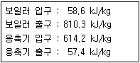
30. 원형 실린더를 마찰 없는 피스톤이 덮고 있다. 피스톤에 비선형 스프링이 연결되고 실린더 내의 기체가 팽창하면서 스프링이 압축된다. 스프링의 압축 길이가 Xm일 때 피스톤에는 kX1.5N의 힘이 걸린다. 스프링의 압축 길이가 0m에서 0.1m로 변하는 동안에 피스톤이 하는 일이 Wa이고, 0.1m에서 0.2m로 변하는 동안에 하는 일이 Wb라면 Wa/Wb는 얼마인가?
31. 내부 에너지가 30kJ인 물체에 열을 가하여 내부 에너지가 50kJ이 되는 동안에 외부에 대하여 10kJ의 일을 하였다. 이 물체에 가해진 열량(kJ)은?
32. 풍선에 공기 2kg이 들어 있다. 일정 압력 500kPa 하에서 가열 팽창하여 체적이 1.2배가 되었다. 공기의 초기온도가 20℃일 때 최종온도(℃)는 얼마인가?
33. 처음 압력이 500kPa이고, 체적이 2m3인 기체가 “PV=일정”인 과정으로 압력이 100kPa까지 팽창할 때 밀폐계가 하는 일(kJ)을 나타내는 계산식으로 옳은 것은?
34. 자동차 엔진을 수리한 후 실린더 블록과 헤드사이에 수리 전과 비교하여 더 두꺼운 개스킷을 넣었다면 압축비와 열효율은 어떻게 되겠는가?
35. 고온 열원의 온도가 700℃이고, 저온 열원의 온도가 50℃인 카르노 열기관의 열효율(%)은?
36. 밀폐계에서 기체의 압력이 100kPa으로 일정하게 유지되면서 체적이 1m3에서 2m3으로 증가되었을 때 옳은 설명은?
37. 최고온도 1300K와 최저온도 300K 사이에서 작동하는 공기표준 Brayton 사이클의 열효율(%)은? (단, 압력비는 9, 공기의 비열비는 1.4이다.)
38. 랭킨사이클에서 25℃, 0.01MPa 압력의 물 1kg을 5MPa 압력의 보일러로 공급한다. 이때 펌프가 가역단열과정으로 작용한다고 가정할 경우 펌프가 한 일(kJ)은? (단, 물의 비체적은 0.001m3/kg이다.)
39. 성능계수가 3.2인 냉동기가 시간당 20MJ의 열을 흡수한다면 이 냉동기의 소비동력(kW)은?
40. 이상적인 디젤 기관의 압축비가 16 일 때 압축 전의 공기 온도가 90℃ 라면 압축 후의 공기 온도(℃)는 얼마인가? (단, 공기의 비열비는 1.4이다.)
3과목: 기계유체역학
41. 효율 80%인 펌프를 이용하여 저수지에서 유량 0.⑤m3/s으로 물을 5m 위에 있는 논으로 올리기 위하여 효율 95%의 전기모터를 사용한다. 전기모터의 최소동력은 몇 kW인가?
42. 그림에서 입구 A에서 공기의 압력은 3×105Pa, 온도 20℃, 속도 5m/s이다. 그리고 출구 B에서 공기의 압력은 2×105Pa, 온도 20℃이면 출구 B에서의 속도는 몇 m/s인가? (단, 압력 값은 모두 절대압력이며, 공기는 이상기체로 가정한다.)
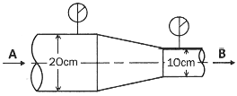
43. 세 변의 길이가 a, 2a, 3a인 작은 직육면체가 점도 μ인 유체 속에서 매우 느린 속도 V로 움직일 때, 항력 F는 F=F(a, μ, V)로 가정할 수 있다. 차원해석을 통하여 얻을 수 있는 F에 대한 표현식으로 옳은 것은?
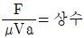
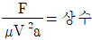
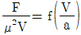
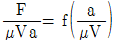
44. 온도증가에 따른 일반적인 점성계수 변화에 대한 설명으로 옳은 것은?
45. 그림과 같이 지름 D와 깊이 H의 원통 용기 내에 액체가 가득 차 있다. 수평방향으로의 등가속도(가속도=a) 운동을 하여 내부의 물의 35%가 흘러 넘쳤다면 가속도 a와 중력가속도 g의 관계로 옳은 것은? (단, D=1.2H이다.)
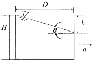
46. 다음 U자관 압력계에서 A와 B의 압력차는 몇 kPa인가? (단, H1=250mm, H2=200mm, H3=600mm이고 수은의 비중은 13,6이다.)
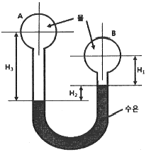
47. 물(μ=1.519×10-3kg/mㆍs)이 직경 0.3cm, 길이 9m인 수평 파이프 내부를 평균속도 0.9m/s로 흐를 때, 어떤 유동이 되는가?
48. 정상 2차원 포텐셜 유동의 속도장이 u=-6y, v=-4x일 때, 이 유동의 유동함수가 될 수 있는 것은? (단, C는 상수이다.)
49. 2차원 직각좌표계(x, y)에서 속도장이 다음과 같은 유동이 있다. 유동장 내의 점 (L, L)에서 유속의 크기는? (단,
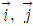
는 각각 x, y 방향의 단위벡터를 나타낸다.)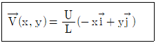
50. 표준공기 중에서 속도 V로 낙하하는 구형의 작은 빗방울이 받는 항력은 FD=3πμVD 로 표시할 수 있다. 여기에서 μ는 공기의 점성계수이며, D는 빗방울의 지름이다. 정지상태에서 빗방울 입자가 떨어지기 시작했다고 가정할 때, 이 빗방울의 최대속도(종속도, terminal velocity)는 지름 D의 몇 제곱에 비례하는가?
51. 지름이 10cm인 원 관에서 유체가 층류로 흐를 수 있는 임계 레이놀즈수를 2100으로 할 때 층류로 흐를 수 있는 최대 평균속도는 몇 m/s인가? (단, 흐르는 유체의 동점성계수는 1.8×10-6m2/s이다.)
52. 계기압 10kPa의 공기로 채워진 탱크에서 지름 0.02m인 수평관을 통해 출구 지름 0.01m인 노즐로 대기(101kPa) 중으로 분사된다. 공기밀도가 1.2kg/m3으로 일정할 때, 0.02m인 관 내부 계기압력은 약 몇 kPa인가? (단, 위치에너지는 무시한다.)
53. 피토정압관을 이용하여 흐르는 물의 속도를 측정하려고 한다. 액주계에는 비중 13.6인 수은이 들어있고 액주계에서 수은의 높이 차이가 20cm일 때 흐르는 물의 속도는 몇 m/s인가? (단, 피토정압관의 보정계수는 C=0.96이다.)
54. 점성계수 μ=0.98Nㆍs/m2인 뉴턴 유체가 수평벽면 위를 평행하게 흐른다. 벽면(y=0) 근방에서의 속도 분포가 u=0.5-150(0.1-y)2이라고 할 때 벽면에서의 전단응력은 몇 Pa인가? (단, y[m]는 벽면에 수직한 방향의 좌표를 나타내며, u는 벽면 근방에서의 접선속도[m/s]이다.)
55. 점성ㆍ비압축성 유체가 수평방향으로 균일속도로 흘러와서 두께가 얇은 수평 평판 위를 흘러 갈 때 Blasius의 해석에 따라 평판에서의 층류 경계층의 두께에 대한 설명으로 옳은 것을 모두 고르면?
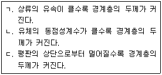
56. 액체 제트가 깃(vane)에 수평방향으로 분사되어 θ만큼 방향을 바꾸어 진행할 때 깃을 고정시키는 데 필요한 힘의 합력의 크기를 F(θ)라고 한다.
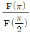
는 얼마인가? (단, 중력과 마찰은 무시한다.)57. 그림과 같은 수문(ABC)에서 A점은 힌지로 연결되어 있다. 수문을 그림과 같은 닫은 상태로 유지하기 위해 필요한 힘 F는 몇 kN인가?
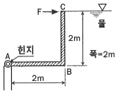
58. 관내의 부차적 손실에 관한 설명 중 틀린 것은?
59. 공기 중을 20m/s로 움직이는 소형 비행선의 항력을 구하려고 1/4 축척의 모형을 물속에서 실험하려고 할 때 모형의 속도는 몇 m/s로 해야 하는가?
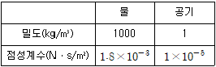
60. 지름이 8mm인 물방울의 내부 압력(게이지 압력)은 몇 Pa인가? (단, 물의 표면 장력은 0.075N/m이다.)
4과목: 기계재료 및 유압기기
61. 베어링에 사용되는 구리합금인 켈밋의 주성분은?
62. 알루미늄 및 그 합금의 질별 기호 중 H가 의미하는 것은?
63. 다음 중 용융점이 가장 낮은 것은?
64. 표면은 단단하고 내부는 인성을 가지고 주철로 압연용 롤, 분쇄기 롤, 철도차량 등 내마멸성이 필요한 기계부품에 사용되는 것은?
65. 체심입방격자(BCC)의 인접 원자수(배위수)는 몇 개인가?
66. 탄소강이 950℃ 전후의 고온에서 적열메짐(red brittleness)을 일으키는 원인이 되는 것은?
67. 금속 재료의 파괴 형태를 설명한 것 중 다른 하나는?
68. 열경화성 수지에 해당하는 것은?
69. Fe-Fe3C 평형상태도에 대한 설명으로 옳은 것은?
70. 오스테나이트형 스테인리스강에 대한 설명으로 틀린 것은?
71. 유압장치의 운동부분에 사용되는 실(seal)의 일반적인 명칭은?
72. 유압 회로 중 미터 인 회로에 대한 설명으로 옳은 것은?
73. 그림과 같은 전환 밸브의 포트수와 위치에 대한 명칭으로 옳은 것은?
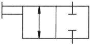
74. KS 규격에 따른 유면계의 기호로 옳은 것은?
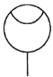
75. 유압장치의 각 구성요소에 대한 기능의 설명으로 적절하지 않은 것은?
76. 속도 제어 회로의 종류가 아닌 것은?
77. 어큐뮬레이터 종류인 피스톤 형의 특징에 대한 설명으로 적절하지 않은 것은?
78. 유압펌프에서 실제 토출양과 이론 토출량의 비를 나타내는 용어는?
79. 난연성 작동유의 종류가 아닌 것은?
80. 작동유 속의 불순물을 제거하기 위하여 사용하는 부품은?
5과목: 기계제작법 및 기계동력학
81. 등가속도 운동에 관한 설명으로 옳은 것은?
82. 그림과 같이 원판에서 원주에 있는 점 A의 속도가 12m/s일 때 원판의 각속도는 약 몇 rad/s인가? (단, 원판의 반지름 r은 0.3m이다.)
83. 같은 길이의 두 줄에 질량 20kg의 물체가 매달려 있다. 이 중 하나의 줄을 자르는 순간의 남는 줄의 장력은 약 몇 N인가? (단, 줄의 질량 및 강성은 무시한다.)
84. 다음 단순조화운동 식에서 진폭을 나타내는 것은?
85. 균질한 원통(cylinder)이 그림과 같이 물에 떠있다. 평형상태에 있을 때 손으로 눌렀다가 놓아주면 상하 진동을 하게 되는데 이때 진동주기(τ)에 대한 식으로 옳은 것은? (단, 원통질량 m, 원통단면적은 A, 물의 밀도는 p이고, g는 중력가속도이다.)
86. 질량 30kg의 물체를 담은 두레박 B가 레일을 따라 이동하는 크레인 A에 6m 길이의 줄에 의해 수직으로 매달려 이동하고 있다. 일정한 속도로 이동하던 크레인이 갑자기 정지하자, 두레박 B가 수평으로 3m까지 흔들렸다. 크레인 A의 이동 속도력은 약 몇 m/s인가?
87. 다음 그림과 같이 진동계에 가진력 F(t)가 작용할 때, 바닥으로 전달되는 힘의 최대 크기가 F1보다 작기 위한 조건은? (단, 이다.)
88. 두 질점이 정면 중심으로 완전탄성충돌할 경우에 관한 설명으로 틀린 것은?
89. 길이 1.0m, 질량 10kg의 막대가 A점에 핀으로 연결되어 정지하고 있다. 1kg의 공이 수평속도 10m/s로 막대의 중심을 때릴 때, 충돌 직후 막대의 각속도는 약 몇 rad/s 인가? (단, 공과 막대 사이에 반발계수는 0.4이다.)
90. 질량이 18kg, 스프링 상수가 50N/cm, 감쇠계수 0.6Nㆍs/cm인 1자유도 점성감쇠계에서 진동계의 감쇠비는?
91. 와이어 컷(wire cut) 방전가공의 특징으로 틀린 것은?
92. 어미나사의 피치가 6mm인 선반에서 1인치당 4산의 나사를 가공할 때, A와 D의 기어의 잇수는 각각 얼마인가? (단, A는 주축 기어의 잇수이고, D는 어미나사 기어의 잇수이다.)
93. 다음 중 소성가공에 속하지 않는 것은?
94. 노즈 반지름이 있는 바이트로 선삭 할 때 가공 면의 이론적 표면 거칠기를 나타내는 식은? (단, f는 이송, R은 공구의 날 끝 반지름이다.)
95. 경화된 작은 강철 볼(ball)을 공작물 표면에 분사하여 표면을 매끈하게 하는 동시에 피로 강도와 그 밖의 기계적 성질을 향상시키는데 사용하는 가공방법은?
96. Al을 강의 표면에 침투시켜 내스케일성을 증가시키는 금속 침투 방법은?
97. 다음 중 자유단조에 속하지 않는 것은?
98. 주물의 결함 중 기공(blow hole)의 방지대책으로 가장 거리가 먼 것은?
99. 용접 피복제의 역할로 틀린 것은?
100. 방전가공에서 전극 재료의 구비조건으로 가장 거리가 먼 것은?